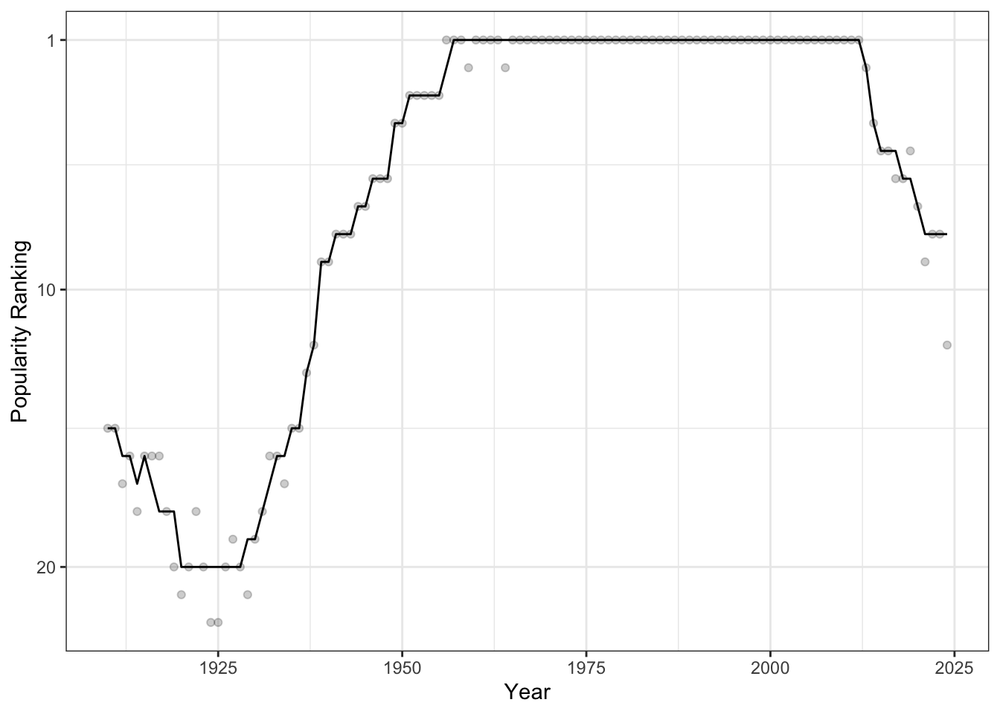
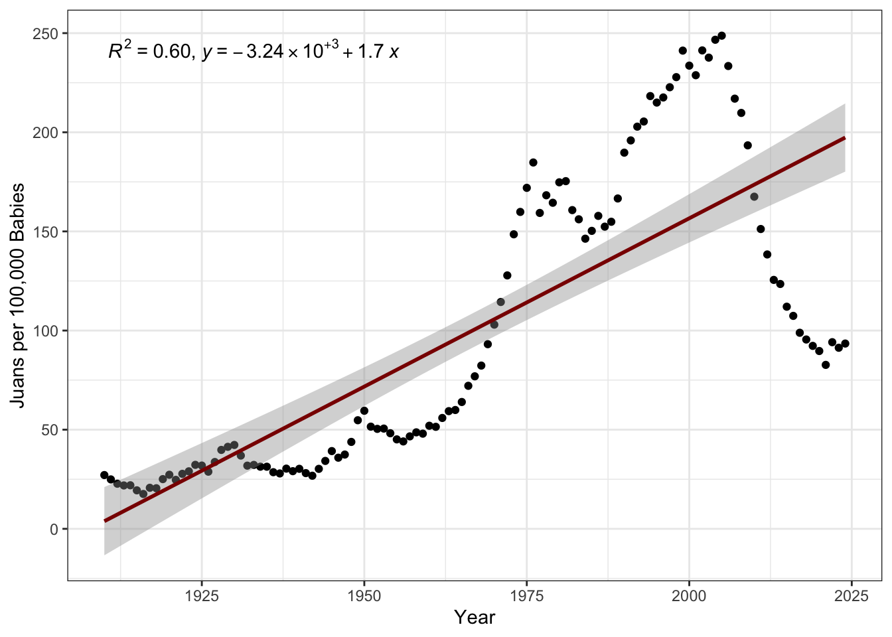
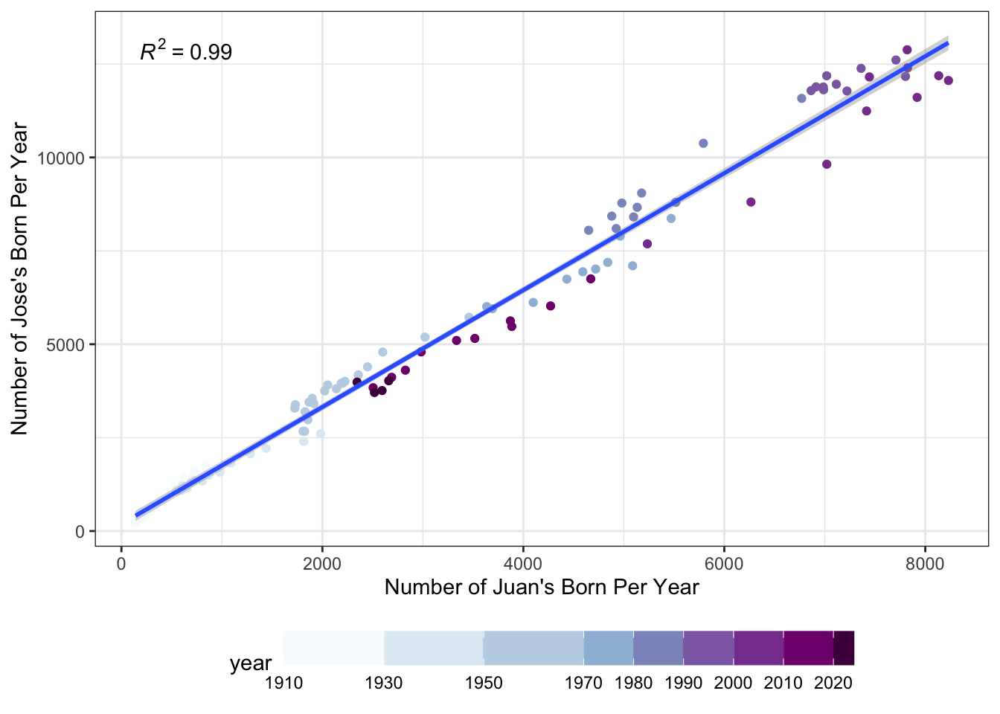
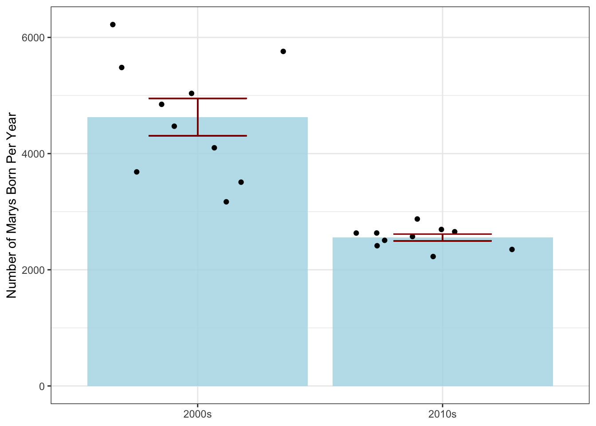
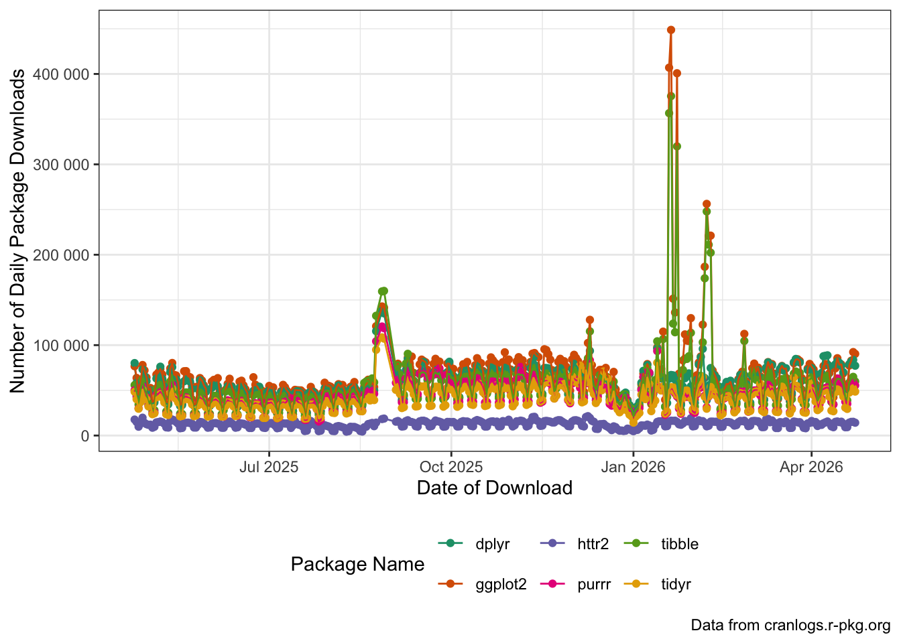

STA 9750 Lecture #7 In-Class Activity: Data Import in R
Class #09: Thursday April 16, 2026 (Lecture #07: Data Import and File System Usage; APIs)
Slides
Review Practice
Every year, the US Social Security Administration reports the number of children born each year in each state with each name: e.g., I was one of 2,041 male babies named Robert born in Texas in 1989.1 I have placed a cleaned-up CSV containing this data (through 2024) online at https://michael-weylandt.com/STA9750/labs/ssa_babynames.csv.gz. (The extra gz extension indicates that this is a gzip compressed file You don’t need to know the details of gzip, only that it is a compression scheme used to make big files smaller; bz and xz will be used for some data sources. These are mainly single-file compression methods, as opposed to zip which compresses a whole directory. )
CautionOptional: Replication Code
The following code can be used to create your own copy of this data set.
SSA_URL <- "https://www.ssa.gov/oact/babynames/state/namesbystate.zip"
TEMPDIR <- tempdir()
TEMPZIP <- fs::path(TEMPDIR, "babynamesbystate.zip")
download.file(SSA_URL, TEMPZIP)
unzip(TEMPZIP, exdir=TEMPDIR)
fs::dir_info(TEMPDIR) |>
dplyr::filter(str_ends(path, ".TXT")) |>
dplyr::pull(path) |>
purrr::map(\(f) readr::read_csv(f,
show_col_types=FALSE,
col_names=c("state", "sex", "year", "name", "number"))) |>
dplyr::bind_rows() |>
readr::write_csv("labs/ssa_babynames.csv.gz") |>
readr::write_csv("docs/labs/ssa_babynames.csv.gz")By the end of today’s class, you should be able to understand everything that’s happening in this little snippet.
The data looks something like this:
Rows: 6,600,640
Columns: 5
$ state <chr> "AK", "AK", "AK", "AK", "AK", "AK", "AK", "AK", "AK", "AK", "AK…
$ sex <chr> "F", "F", "F", "F", "F", "F", "F", "F", "F", "F", "F", "F", "F"…
$ year <dbl> 1910, 1910, 1910, 1910, 1910, 1910, 1910, 1910, 1911, 1911, 191…
$ name <chr> "Mary", "Annie", "Anna", "Margaret", "Helen", "Elsie", "Lucy", …
$ number <dbl> 14, 12, 10, 8, 7, 6, 6, 5, 12, 7, 7, 6, 6, 6, 9, 8, 7, 7, 7, 7,…Read this data into R using the read_csv() function from the readr package; note that the read_csv() function can take a URL as an input so you don’t need to directly download this data set.
Once you have downloaded the baby names data, create tables or visualizations that address the following questions:
- In 2024, what were the five most common girls’ names nationwide?
TipSolution
library(tidyverse)
library(gt)
read_csv("https://michael-weylandt.com/STA9750/labs/ssa_babynames.csv.gz") |>
filter(year == 2024,
sex == "F") |>
group_by(name) |>
summarize(number = sum(number)) |>
slice_max(number, n=5) |>
gt() |>
cols_label(name = "Name",
number = "Number of Girls Born Nationwide") |>
tab_header(title="5 Most Popular Girls Names in 2024") |>
tab_source_note("Data from the US SSA")Rows: 6600640 Columns: 5
── Column specification ────────────────────────────────────────────────────────
Delimiter: ","
chr (3): state, sex, name
dbl (2): year, number
ℹ Use `spec()` to retrieve the full column specification for this data.
ℹ Specify the column types or set `show_col_types = FALSE` to quiet this message.| 5 Most Popular Girls Names in 2024 | |
| Name | Number of Girls Born Nationwide |
|---|---|
| Olivia | 14718 |
| Emma | 13485 |
| Amelia | 12740 |
| Charlotte | 12552 |
| Mia | 12113 |
| Data from the US SSA | |
Since we’re going to use this data set several times, it’s a bit more efficient to save it to a variable once instead of re-downloading it over and over:
SSA <- read_csv("https://michael-weylandt.com/STA9750/labs/ssa_babynames.csv.gz") and now we have:
library(tidyverse)
library(gt)
SSA |>
filter(year == 2024,
sex == "F") |>
group_by(name) |>
summarize(number = sum(number)) |>
slice_max(number, n=5) |>
gt() |>
cols_label(name = "Name",
number = "Number of Girls Born Nationwide") |>
tab_header(title="5 Most Popular Girls Names in 2024") |>
tab_source_note("Data from the US SSA")giving the same results.
- In terms of popularity ranking (1st, 2nd, 3rd, etc), how has the popularity of the name “Michael” (for boys) changed in New York?
TipSolution
SSA |>
filter(state == "NY",
sex == "M") |>
# Flip ranking so high number => low (1st, 2nd) rank
# Compute rankings _for that year_
mutate(pop_rank = dense_rank(-number),
.by = "year") |>
filter(name == "Michael") |>
mutate(rank_smooth = runmed(pop_rank, 11)) |>
ggplot(aes(x=year)) +
geom_point(aes(y=pop_rank), alpha=0.2) +
geom_line(aes(y=rank_smooth)) +
scale_y_reverse(breaks=c(1, 10, 20, 30, 40, 50)) +
theme_bw() +
xlab("Year") +
ylab("Popularity Ranking")
We see that, starting around 1925, the name “Michael” became very popular in NY and it was the most popular male name from 1956 to 2013 in all but two years.
- How has the fraction of Juans born(as a fraction of all names) increased over time? (Hint: Think OLS and use the
ggpmisc::stat_poly_eqfunction to annotate your solution.)
TipSolution
library(ggpmisc)
SSA |>
summarize(n_total=sum(number),
n_juan = sum(number * (name == "Juan")),
.by = c("year")) |>
mutate(p_juan = n_juan / n_total) |>
ggplot(aes(x=year, y=1e5 * p_juan)) +
geom_point() +
xlab("Year") +
ylab("Juans per 100,000 Babies") +
theme_bw() +
stat_poly_eq(use_label(c("R2", "eq"))) +
geom_smooth(method="lm", col="red4")
Here, we see that, while the popularity of Juan has overall been increasing (with an \(R^2\) of 60%, which is quite good for the social sciences), there has been a drop-off post-2000 that a simple linear model wouldn’t capture.
Note also the use of “Juans per 100,000” on the \(y\)-axis here. This is a general technique to put small probabilities into a more natural-human scale. You may be familiar with the use of micromorts or deaths per million people as a measure of the risk associated with various lifestyle factors.
- Have the numbers of Juans and Joses born each year increased in rough proportion to each other? (Hint: Think OLS)
TipSolution
library(ggpmisc)
SSA |>
filter(name %in% c("Juan", "Jose")) |>
summarize(n=sum(number),
.by = c("year", "name")) |>
pivot_wider(names_from=name,
values_from=n) |>
ggplot(aes(x=Juan, y=Jose)) +
# Put this here b/c color doesn't impact the stat_()s
# Only the point
geom_point(aes(color=year)) +
scale_color_fermenter(palette=3,
direction=1,
breaks=c(1910, 1930, 1950,1970, 1980, 1990, 2000, 2010, 2020)) +
theme_bw() +
theme(legend.position="bottom") +
guides(color=guide_colorbar(barwidth=20)) +
stat_poly_line() +
stat_poly_eq() +
xlab("Number of Juan's Born Per Year") +
ylab("Number of Jose's Born Per Year")
As before, by seeing the darkest purple dots near the center and not the top right of the graph, we see that there are fewer Juans and Joses being born than 30 years ago.
- Were there more Marys born per year in the 2000s or the 2010s? (Hint: Think ANOVA)
TipSolution
SSA |>
filter(year >= 2000,
year <= 2019,
name == "Mary") |>
group_by(year) |>
summarize(n_mary = sum(number)) |>
mutate(decade=if_else(year <= 2009, "2000s", "2010s")) |>
group_by(decade) |>
mutate(mean_n_mary = mean(n_mary),
sd_n_mary = sd(n_mary),
# Note n() to count number of obs per group
se_n_mary = sd_n_mary / sqrt(n())) |>
ggplot(aes(x=decade, y=n_mary)) +
stat_summary(fun="mean",
geom="col",
fill="lightblue",
alpha=0.8) +
# After so the points appear _above_ the summary bar
geom_jitter(height = 0) +
theme_bw() +
geom_errorbar(aes(ymin = mean_n_mary - se_n_mary,
ymax = mean_n_mary + se_n_mary),
color="red4",
width=0.4) +
xlab(NULL) +
ylab("Number of Marys Born Per Year")
Because we’re looking at the year as a categorical (decade) variable instead of a numeric quantity here, we use an ANOVA-inspired barplot instead of linear regression.2
Using the File System
Exercises #01
Use the
getwd()to find your current working directory. For the following exercises to be most useful, you will want to ensure that this is yourSTA9750-2026-SPRINGcourse directory. If you have somehow changed it please use thesetwd()function to return to the proper directory.In your
STA9750-2026-SPRINGdirectory, you have a file calledindex.qmd. Use thepathfunction from thefspackage to create apathobject pointing to that file and then use thepath_absfunction to convert that relative path to an absolute path.
TipSolution
Note that these solutions will give different answers on your personal computer than on this web interface. That is to be expected since we are going outside of R and interacting with the whole system, so differences should not surprise you.
- Using the
fs::file_size()function, how big is the file you found in the previous section?
TipSolution
Note that these solutions will give different answers on your personal computer as opposed to this web interface. That is to be expected since we are going outside of R and interacting with the whole system, so differences should not surprise you.
- Use the
file_existsfunction to determine whether you have started Mini-Project #03.
TipSolution
-
A common pattern in working with files is wanting to find all files whose names match a certain pattern. This is known colloquially as globbing. The
dir_lsfunction can be used to list all files in a directory. First use it to list all files in yourSTA9750-2026-SPRINGcourse directory; then use theglobargument to list only theqmdfiles in that directory.Hint: The
globargument should be a string with asterisks in it where you will allow any match. For example,*.csvwill match all CSV files,abc*will match all files whose names start withabc, andabc*.csvwill match files whose names start withabcand end with.csvwith arbitrary text in between.
TipSolution
- The
dir_infofunction can be used to create a data frame with information about all files in a directory. Use it anddplyrfunctionality to find the largest file in your project folder. Then return its absolute path.
TipSolution
-
Often, we want to perform a search over all files and folders in a directory recursively - that is, looking inside subfolders, not just at files in the top level. The
recurse=TRUEargument todir_infowill return information about all files contained in any level of the directory. Usedir_infoto search thedatadirectory you have created to store Mini-Project data and find the smallest data file.Hint: You will need to pass a
pathargument todir_infoso that you search only yourdatafolder and not your entire course directory.
TipSolution
- Determine how much storage is used by the 5 largest files in any part of your project directory.
TipSolution
HTTP and Web Access
Exercises #02
Earlier, we used the fact that read_csv could download a file automatically for us to read in the SSA Data. We are now going to perform essentially the same process using httr2, but instead we’re going to look for the smaller nyc_demos.csv file in the same directory.3
-
Use the
httr2package to build a suitablerequestobject. You should build your request in two steps:Specify the domain using
requestAdd the path using
req_url_path
TipSolution
library(httr2)
request("https://michael-weylandt.com") |>
req_url_path("STA9750",
"labs",
"nyc_demos.csv") <httr2_request>
GET https://michael-weylandt.com/STA9750/labs/nyc_demos.csv
Body: empty- Now that you have built a request, perform it and check to make sure your request was successful.
TipSolution
library(httr2)
request("https://michael-weylandt.com") |>
req_url_path("STA9750",
"labs",
"nyc_demos.csv") |>
req_perform() |>
resp_check_status()Remember - no noise is good noise! The fact resp_check_status didn’t throw an error means we’re good to continue.
Note that we’re switching from req_ functions to resp_ functions after we perform the request since we’re interested in what we got back from the server, i.e., the response.
- Because your request was successful, it will have a body. Extract this body as a string and pass it to
read_csvto read the data intoR.
TipSolution
library(httr2)
library(readr)
request("https://michael-weylandt.com") |>
req_url_path("STA9750",
"labs",
"nyc_demos.csv") |>
req_perform() |>
resp_check_status() |>
resp_body_string() |>
read_csv()Rows: 2754 Columns: 5
── Column specification ────────────────────────────────────────────────────────
Delimiter: ","
chr (2): variable, field
dbl (3): Y2000, Y2010, district
ℹ Use `spec()` to retrieve the full column specification for this data.
ℹ Specify the column types or set `show_col_types = FALSE` to quiet this message.# A tibble: 2,754 × 5
variable field Y2000 Y2010 district
<chr> <chr> <dbl> <dbl> <dbl>
1 Population White Nonhispanic 55293 76242 1
2 Population Black Nonhispanic 6596 6775 1
3 Population Asian and Pacific Islander Nonhispanic 62768 60776 1
4 Population Other Nonhispanic 879 641 1
5 Population Two or More Races Nonhispanic 3109 3651 1
6 Population Hispanic Origin 20786 20881 1
7 Population Female 73784 86152 1
8 Population Male 75647 82814 1
9 Population Under 5 years 6501 8338 1
10 Population 5 to 9 years 6197 6120 1
# ℹ 2,744 more rowsNote that you can also pass a path to req_perform to save the result to a file instead of holding it in memory. This is useful if you are downloading many files and saving them for later use.
- Modify your analysis to download your
mp01.qmdfile. To find the appropriate URL, you will need to first find the file in the web interface for your GitHub repository and then click theRawbutton to a direct link to the file. Make a request to get this data and check whether the request was successful.
TipSolution
library(httr2)
request("https://raw.githubusercontent.com") |>
req_url_path(YOUR GITHUB ID
COURSE REPO,
"refs",
"heads",
"main",
"mp01.qmd") |>
req_perform() |>
resp_check_status() - Next, modify your analysis to check whether
mp04.qmdhas already been uploaded. Note that this will throw an error because a404is returned, indicating that you have not yet uploadedmp04.qmd. We will address this in the next step.
TipSolution
library(httr2)
request("https://raw.githubusercontent.com") |>
req_url_path(YOUR GITHUB ID
COURSE REPO,
"refs",
"heads",
"main",
"mp04.qmd") |>
req_perform()- Obviously, that error is a bit of a problem. Let’s change how our request handles errors. The
req_errorfunction can be used to modify a request to change whether an error is thrown. As its argument, it takes a function that checks for an error. Since we want to never throw an error, define a function with one argumentxthat always returns false and pass this toreq_error. (Note thatreq_errormust come beforereq_performsince it changes how a request is performed.) Use this in conjunction with theresp_is_errorfunction to check that your request fails.
TipSolution
library(httr2)
always_false <- function(x) FALSE
request("https://raw.githubusercontent.com") |>
req_url_path(YOUR GITHUB ID
COURSE REPO,
"refs",
"heads",
"main",
"mp04.qmd") |>
req_error(is_error = always_false) |>
req_perform() |>
resp_is_error()Note: Using an anonymous function, we can write this a bit more compactly as
library(httr2)
request("https://raw.githubusercontent.com") |>
req_url_path(YOUR GITHUB ID
COURSE REPO,
"refs",
"heads",
"main",
"mp04.qmd") |>
req_error(is_error = \(x) FALSE) |>
req_perform() |>
resp_is_error()-
Package your code into a function that takes an integer argument and tests whether that mini-project is missing from your GitHub.
Hint: The
gluepackage may be useful to make strings here:glue("mp0{N}.qmd")will automatically substitute the value of the variableNfor you.
TipSolution
library(httr2)
library(glue)
mp_is_missing <- function(N) {
request("https://raw.githubusercontent.com") |>
req_url_path(YOUR GITHUB ID
COURSE REPO,
"refs",
"heads",
"main",
glue("mp0{N}.qmd")) |>
req_error(is_error = \(x) FALSE) |>
req_perform() |>
resp_is_error()
}-
Finally, check which of your MPs have not yet been submitted.
Unfortunately, your function is not vectorized so this is not as simple as
func(1:4). Instead, we want to apply the same function separately to each element of the vectorc(1,2,3,4). This is a use case for themapfamily of functions, which we will discuss in more detail later during our final optional enrichment session after your final presentations. Since your function returns a logical value, we’ll usemap_lglhere.
TipSolution
library(httr2)
library(glue)
mp_is_missing <- function(N) {
request("https://raw.githubusercontent.com") |>
req_url_path(YOUR GITHUB ID
COURSE REPO,
"refs",
"heads",
"main",
glue("mp0{N}.qmd")) |>
req_error(is_error = \(x) FALSE) |>
req_perform() |>
resp_is_error()
}
map_lgl(1:4, mp_is_missing)This example is maybe a bit silly, but it is essentially how I check whether your mini-projects have been submitted on time. (I map over students rather than the project numbers and perform more checks, but the same ideas apply.)
API Usage
Next, we are going to practice accessing data from a nice API using httr2. Specifically, we are going to interact with the cranlogs server, which keeps records of the most popular R packages based on download frequency.
Documentation for cranlogs can be found in its GitHub README with a very small example at here.4
The cranlogs documentation give the following example of how the curl program can call the API from the command line:
curl https://cranlogs.r-pkg.org/downloads/total/last-week/ggplot2 % Total % Received % Xferd Average Speed Time Time Time Current
Dload Upload Total Spent Left Speed
0 0 0 0 0 0 0 0 --:--:-- --:--:-- --:--:-- 0
100 82 100 82 0 0 430 0 --:--:-- --:--:-- --:--:-- 431
[{"start":"2026-04-08","end":"2026-04-14","downloads":474335,"package":"ggplot2"}]To see what type of data this URL provides us, you can simply open it in your browser and observe that it returns JSON data. We can emulate this action in R and parse the data into an R object:
start end downloads package
1 2026-04-17 2026-04-23 515995 ggplot2And if we want to get download information for other packages, we can simply modify the URL:
start end downloads package
1 2026-04-17 2026-04-23 488687 dplyr start end downloads package
1 2026-04-17 2026-04-23 230371 readrand so on. But this quickly becomes repetitive and we would prefer a programmatic interface. This is where advanced functionality from the httr2 package comes in.
httr2
Recall that httr2 takes a “three-stage” approach to handling HTTP requests:
- First, we build a request, specifying the URL to be queried, the mode of that query, and any relevant information (data, passwords, etc.)
- Then, we execute that request to get a response
- Finally, we handle that response, transforming its contents into
Ras appropriate
Let’s look at these one at a time.
Note that the first few steps should feel quite similar to what we did above, since we’re still communicating via HTTP. The content of that communication will be different (JSON instead of CSV) and the server’s work will be different (adding up download statistics instead of serving a static file), but the protocol–and hence most of our httr2 flow–remains unchanged.
Build a Request
We can build a request using the request function:
function (base_url)
{
new_request(base_url)
}
<bytecode: 0x322534710>
<environment: namespace:httr2>As seen here, we start a request by putting in a “base URL” - this is the unchanging part of the URL that won’t really depend on what query we are making.
For the cranlogs API, we can take the base URL to be
https://cranlogs.r-pkg.org
so our base request is:
<httr2_request>
GET https://cranlogs.r-pkg.org
Body: emptyWe see here that this is a GET request by default, indicating we would like a response from the server, but we are not sending data to the server for processing.
We then modify the path of the request to point to the specific resource or endpoint we want to query. For example, if we want to get the “top” R packages for the last day, we can run the following:
my_req <- my_req |>
req_url_path_append("top") |>
req_url_path_append("last-day")
print(my_req)<httr2_request>
GET https://cranlogs.r-pkg.org/top/last-day
Body: emptyExecute a Request to get a Response
Now that we have built our request, we pass it to req_perform5 to execute (perform) the request:
my_resp <- req_perform(my_req)
print(my_resp)<httr2_response>
GET https://cranlogs.r-pkg.org/top/last-day
Status: 200 OK
Content-Type: application/json
Body: In memory (444 bytes)The result of performing this request is a response object. We see several things in this response:
- We received back a “200 OK” response, indicating that our query worked perfectly
- We received back data in a
jsonformat - Our results are currently in memory (as opposed to being saved into a file)
Process the Response for Use in R
Since we know our response is in JSON format, we can use the resp_body_json to get the “body” (content) of the response and parse it as json:
downloads_raw <- resp_body_json(my_resp)
print(downloads_raw)$start
[1] "2026-04-23T00:00:00.000Z"
$end
[1] "2026-04-23T00:00:00.000Z"
$downloads
$downloads[[1]]
$downloads[[1]]$package
[1] "rlang"
$downloads[[1]]$downloads
[1] "97741"
$downloads[[2]]
$downloads[[2]]$package
[1] "ggplot2"
$downloads[[2]]$downloads
[1] "90359"
$downloads[[3]]
$downloads[[3]]$package
[1] "cli"
$downloads[[3]]$downloads
[1] "82327"
$downloads[[4]]
$downloads[[4]]$package
[1] "vctrs"
$downloads[[4]]$downloads
[1] "81454"
$downloads[[5]]
$downloads[[5]]$package
[1] "lifecycle"
$downloads[[5]]$downloads
[1] "77239"
$downloads[[6]]
$downloads[[6]]$package
[1] "dplyr"
$downloads[[6]]$downloads
[1] "77216"
$downloads[[7]]
$downloads[[7]]$package
[1] "Rcpp"
$downloads[[7]]$downloads
[1] "73273"
$downloads[[8]]
$downloads[[8]]$package
[1] "glue"
$downloads[[8]]$downloads
[1] "70192"
$downloads[[9]]
$downloads[[9]]$package
[1] "curl"
$downloads[[9]]$downloads
[1] "68495"This gives us the type of data we were looking for!
Note that httr2 is designed for “piped” work, so we can write the entire process as
request("https://cranlogs.r-pkg.org") |>
req_url_path_append("top") |>
req_url_path_append("last-day") |>
req_perform() |>
resp_body_json()$start
[1] "2026-04-23T00:00:00.000Z"
$end
[1] "2026-04-23T00:00:00.000Z"
$downloads
$downloads[[1]]
$downloads[[1]]$package
[1] "rlang"
$downloads[[1]]$downloads
[1] "97741"
$downloads[[2]]
$downloads[[2]]$package
[1] "ggplot2"
$downloads[[2]]$downloads
[1] "90359"
$downloads[[3]]
$downloads[[3]]$package
[1] "cli"
$downloads[[3]]$downloads
[1] "82327"
$downloads[[4]]
$downloads[[4]]$package
[1] "vctrs"
$downloads[[4]]$downloads
[1] "81454"
$downloads[[5]]
$downloads[[5]]$package
[1] "lifecycle"
$downloads[[5]]$downloads
[1] "77239"
$downloads[[6]]
$downloads[[6]]$package
[1] "dplyr"
$downloads[[6]]$downloads
[1] "77216"
$downloads[[7]]
$downloads[[7]]$package
[1] "Rcpp"
$downloads[[7]]$downloads
[1] "73273"
$downloads[[8]]
$downloads[[8]]$package
[1] "glue"
$downloads[[8]]$downloads
[1] "70192"
$downloads[[9]]
$downloads[[9]]$package
[1] "curl"
$downloads[[9]]$downloads
[1] "68495"This data is not super helpful for us, since it’s in a “list of lists” format. This is not uncommon with json responses and it is usually at this point that we have a bit of work to do in order to make the data useable. Thankfully, API data is typically well-structured, so this doesn’t wind up being too hard. I personally find this type of complex R output a bit hard to parse, so I instead print it as a “string” (the ‘raw text’ of the unparsed JSON) and use the prettify() function from the jsonlite package to make it extra readable:
library(jsonlite)
my_resp |>
resp_body_string() |>
prettify(){
"start": "2026-04-23T00:00:00.000Z",
"end": "2026-04-23T00:00:00.000Z",
"downloads": [
{
"package": "rlang",
"downloads": "97741"
},
{
"package": "ggplot2",
"downloads": "90359"
},
{
"package": "cli",
"downloads": "82327"
},
{
"package": "vctrs",
"downloads": "81454"
},
{
"package": "lifecycle",
"downloads": "77239"
},
{
"package": "dplyr",
"downloads": "77216"
},
{
"package": "Rcpp",
"downloads": "73273"
},
{
"package": "glue",
"downloads": "70192"
},
{
"package": "curl",
"downloads": "68495"
}
]
}
This is the same data as before, but much easier to read. At this point, we should pause and make an ‘attack plan’ for our analysis. I see several things here:
- I really only want the
"downloads"part of the response. - Each element inside
downloadshas the same flat structure, so they can be easily built into a one-row data frame. - The column names are the same for each
downloadselement, so we will be able to put them into one big easy-to-use data frame.
To do these steps, we will need to use functionality from the purrr package, which we will discuss in more detail later in the course. For now, it suffices to run:
Here, we see we
- Pulled out the
"downloads"portion of the JSON (pluck) - Converted each row to a data frame (
map(as_tibble). Theas_tibbledoes the data frame conversion and themapmeans “do this to each element separately”.) - Combined the results rowwise (
list_rbind)
The result is a very nice little data frame:
downloads_df# A tibble: 9 × 2
package downloads
<chr> <chr>
1 rlang 97741
2 ggplot2 90359
3 cli 82327
4 vctrs 81454
5 lifecycle 77239
6 dplyr 77216
7 Rcpp 73273
8 glue 70192
9 curl 68495 Exercises #03
Now it’s your turn! In your breakout rooms, try the following:
Make sure you can run all of the code above.
-
Modify the above code to get the top 100
Rpackages.This is a minor change to the request only, but you will need to read the documentation to see where and how the request needs to be changed.
NoteSolution
library(httr2)
library(tidyverse)
request("https://cranlogs.r-pkg.org") |>
req_url_path_append("top") |>
req_url_path_append("last-day") |>
req_url_path_append(100) |>
req_perform() |>
resp_body_json() |>
pluck("downloads") |>
map(as_tibble) |>
list_rbind()# A tibble: 100 × 2
package downloads
<chr> <chr>
1 rlang 97741
2 ggplot2 90359
3 cli 82327
4 vctrs 81454
5 lifecycle 77239
6 dplyr 77216
7 Rcpp 73273
8 glue 70192
9 curl 68495
10 magrittr 66048
# ℹ 90 more rows-
Modify your query to get the daily downloads for the
ggplot2package over the last month. This will require changes to how you process the response, so be sure to look at the raw JSON first.Hint: The
pluckfunction can also take a number as input. This will say which list item (by position) to return.
NoteSolution
library(httr2)
library(tidyverse)
request("https://cranlogs.r-pkg.org") |>
req_url_path_append("downloads") |>
req_url_path_append("daily") |>
req_url_path_append("last-month") |>
req_url_path_append("ggplot2") |>
req_perform() |>
resp_body_json() |>
pluck(1) |>
pluck("downloads") |>
map(as_tibble) |>
list_rbind()# A tibble: 30 × 2
day downloads
<chr> <int>
1 2026-03-25 84324
2 2026-03-26 82543
3 2026-03-27 63567
4 2026-03-28 41680
5 2026-03-29 40636
6 2026-03-30 74240
7 2026-03-31 79241
8 2026-04-01 76140
9 2026-04-02 73048
10 2026-04-03 56827
# ℹ 20 more rows-
‘Functionize’ your daily downloads query as a function which takes an arbitrary package name and gets its daily downloads.
Hint: Use a
mutatecommand to add the package name as a new column to the resulting data frame and to convert thedaycolumn to aDateobject (day=as.Date(day)).
NoteSolution
library(httr2)
library(tidyverse)
get_downloads <- function(pkg){
request("https://cranlogs.r-pkg.org") |>
req_url_path_append("downloads") |>
req_url_path_append("daily") |>
req_url_path_append("last-month") |>
req_url_path_append(pkg) |>
req_perform() |>
resp_body_json() |>
pluck(1) |>
pluck("downloads") |>
map(as_tibble) |>
list_rbind() |>
mutate(package=pkg,
day=as.Date(day))
}
gg_downloads <- get_downloads("ggplot2")
print(gg_downloads)# A tibble: 30 × 3
day downloads package
<date> <int> <chr>
1 2026-03-25 84324 ggplot2
2 2026-03-26 82543 ggplot2
3 2026-03-27 63567 ggplot2
4 2026-03-28 41680 ggplot2
5 2026-03-29 40636 ggplot2
6 2026-03-30 74240 ggplot2
7 2026-03-31 79241 ggplot2
8 2026-04-01 76140 ggplot2
9 2026-04-02 73048 ggplot2
10 2026-04-03 56827 ggplot2
# ℹ 20 more rows-
Use your function to get daily downloads for the following
Rpackages:ggplot2dplyrhttr2tibblepurrr-
tidyrfor the year and combine your results into a single data frame. Then plot the download trends for each package usingggplot2.
You can do this by calling your function in a loop, but you should also try to apply the
map() |> list_rbind()idiom here as well.To get values for a specific window, replace
"last-month"with a date range formatted as"YYYY-MM-DD::YYYY-MM-DD". For this problem, you can usestrftime(Sys.Date(), "%Y-01-01:%Y-%m-%d")which evaluates to the string “2026-01-01:2026-04-24”, i.e., from the start of the year to today orpaste(Sys.Date() - 365, Sys.Date(), sep=":")to get “2025-04-24:2026-04-24” for the last 365 days.
NoteSolution
library(tidyverse)
library(httr2)
PACKAGES <- c("ggplot2", "dplyr", "httr2", "tibble", "purrr", "tidyr")
date_range <- paste(Sys.Date() - 365,
Sys.Date(), sep=":")
get_downloads_year <- function(pkg){
request("https://cranlogs.r-pkg.org") |>
req_url_path_append("downloads") |>
req_url_path_append("daily") |>
req_url_path_append(date_range) |>
req_url_path_append(pkg) |>
req_perform() |>
resp_body_json() |>
pluck(1) |>
pluck("downloads") |>
map(as_tibble) |>
list_rbind() |>
mutate(package=pkg,
day=as.Date(day))
}
PACKAGES |>
map(get_downloads_year) |>
list_rbind() |>
ggplot(aes(x=day,
y=downloads,
color=package,
group=package)) +
geom_point() +
geom_line() +
scale_x_date() +
xlab("Date of Download") +
ylab("Number of Daily Package Downloads") +
theme_bw() +
labs(caption="Data from cranlogs.r-pkg.org") +
theme(legend.position="bottom") +
scale_color_brewer(type="qual",
palette=2,
name="Package Name") +
scale_y_continuous(labels=scales::label_number())
Can you see the start of the semester(s) in this data? What other patterns can you spot?
Footnotes
You might remember the aggregated version of this data from the review exercise in Lab #05.↩︎
Note, however, that standard ANOVA is basically just a very restricted linear model; cf. https://lindeloev.github.io/tests-as-linear/.↩︎
-
The
ssa_babynames.csv.gzfile is compressed because it’s big, but that makes downloading slightly trickier than I want to demonstrate here. Essentially, to getreadr::read_csvto read it correctly, we have to save it to a file and read it there, rather than simply reading it in from memory:library(httr2) library(readr) request("https://michael-weylandt.com") |> req_url_path("STA9750", "labs", "ssa_babynames.csv.gz") |> req_perform("ssa_babynames.csv.gz") |> resp_check_status() read_csv("ssa_babynames.csv.gz")This isn’t hard per se, but it’s just one extra thing to think about.↩︎
In this case, there is a
cranlogspackage for interacting with this API. This type of package is commonly called a “wrapper” because it shields the user from the details of the API and exposes a more idiomatic (and more useful) interface. In general, when you can find anRpackage that wraps an API, it is a good idea to use it. For certain very complex APIs, e.g., the API that powers Bloomberg Financial Information Services, use of the associatedRpackage is almost mandatory because the underlying API is so complicated. For this in-class exercise, we will use the “raw” API as practice since you can’t always assume a niceRpackage will exist.↩︎We will only use the basic
req_performfor now, buthttr2provides options for parallel execution, delayed execution, etc..↩︎